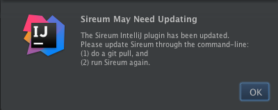
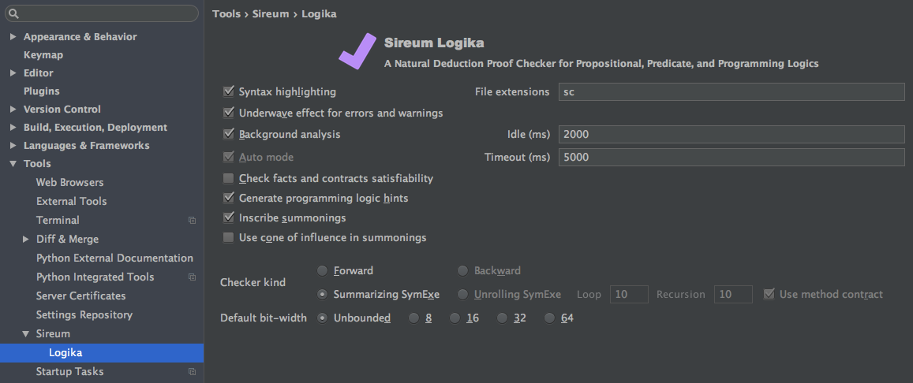
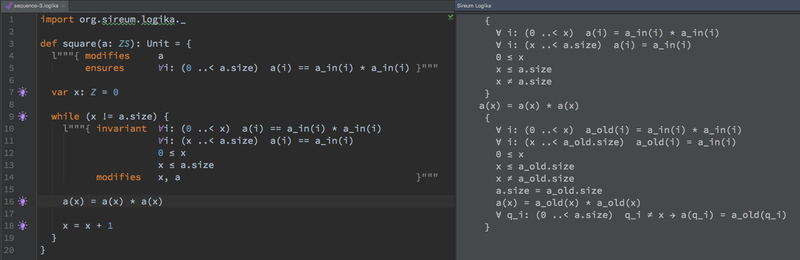
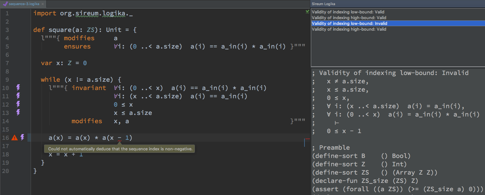

Sireum Logika Documentation
2. IntelliJ-based Logika Integrated Verification Environment (LIVE)
2. IntelliJ-based Logika Integrated Verification Environment (LIVE)¶
To aid the development of Logika proofs, you can use the Sireum v3 IntelliJ plugin that includes LIVE. Here is a screenshot:
{kind=link}
2.1. LIVE Features¶
LIVE features mimic the typical features one would expect in a modern IDE.
- Syntax highlighting and error/warning reporting similar to most Integrated Development Environments (IDEs) for popular programming languages.
- Convenient keyboard shortcuts for inserting logical symbols that works for any editor file types.
- Verification engine running in the background to check proofs as you type.
- Can be used in conjunction with IntelliJ’s
Scala Worksheet
(
.scfiles) or its Scala editor (.scalafiles) to benefit from IntelliJ IDE features (e.g., the screenshot above illustrates how LIVE works with the Scala Worksheet).
2.2. LIVE Install¶
2.2.1. Prerequisites¶
LIVE requires IntelliJ 15; please take a look at its system requirements and follow the installation instructions for your respective operating system.
Note
In OS X, IntelliJ is shipped with a custom JDK that simplifies its installation.
In Linux and Windows, it requires JDK 1.6 or higher.
The sireum-v3 directory (installed in Getting Started)
contains a JDK 1.8 that can be used for running IntelliJ under sireum-v3/platform/java;
to use that, set the JAVA_HOME environment variable to the absolute path of
sireum-v3/platform/java and add the absolute path of sireum-v3/platform/java/bin
to the PATH environment variable.
2.2.2. Installing Sireum v3 Plugin¶
This step is optional as opening any Logika files retrieved during LIVE Examples will cause IntelliJ to suggest you to install the Sireum v3 IntelliJ plugin. Thus, you can choose to skip directly to LIVE Examples (but you might want to take a look at Optional Settings first).
As a reference, below are the instructions to manually install LIVE from JetBrains’ plugin repositories.
First, open IntelliJ’s
Preferences
(shortcut: ⌘, in OS X):
{kind=link}
- Click on
Plugins. - Select
Browse repositories.... - Type
sireumin the search text field of the newly displayed window. - Click
Installand then clickRestartIntelliJ.
Once restarted, LIVE adds a Sireum -> Logika sub-menu under the
IntelliJ Tools menu.
2.3. Optional Settings¶
2.3.1. Configuring Scala and Scala Worksheet Settings¶
By default, LIVE is configured to also work with
Scala Worksheet
.sc files; Scala Worksheet is an excellent tool for learning Scala.
Using .sc files allow one to test and prove Logika programs using the same editor.
You can configure LIVE to also work with .scala files to
benefit from, for example, its code-folding feature, which is handy for hiding
proof claims that have been verified.
To have a better experience working with Logika programs using the Scala or Scala Worksheet editors, it is best to configure IntelliJ’s Scala CodeStyle and Inspection settings.
- Logika does not accept margin characters that can be stripped for its proof statements that use multi-line strings. By default, IntelliJ is configured to insert margin characters and strip/insert margin on copy and paste. It is best to disable these features when working with Logika (see Working with Strings in Scala).
- The IntelliJ Scala plugin defines some code inspections that are beneficial when
programming Scala programs. A couple of these code inspections produce spurious
warnings for Logika programs.
Thus, it is best to disable them when working on Logika programs.
The two code inspections can be found in the
IntelliJ’s Editor Inspections
settings under
Scala->General:Comparing unrelated types: Logika uses arbitrary-precision integers (scala.BigInt, which is aliased asZin Logika) instead of using 32-bitInt. IntelliJ gives a spurious warning when a variable of typeZ(the alias) is compared with anIntliteral (it does not give such warning ifBigIntis used directly, but that is not supported in Logika).Redundant Return: Logika requires an explicitreturnkeyword when a method returns a value (which can only be done at the end of the method, thus, in Scala, it is unnecessary).
2.3.2. Using A Fixed-Width Font¶
When working with Logika math Unicode symbols (see LIVE Shortcuts), it is best to use a font that is also (mostly) fixed-width for those symbols.
For Mac OS X and Linux, Adobe’s Source Code Pro is a good font to use (it is also an excellent font for programming or other purposes where a fixed-width font is desirable).
Follow the download and install instructions, and then set IntelliJ’s editor font to use it.
2.4. LIVE Update¶
IntelliJ will notify you whenever there is a newer version of LIVE. If accepted and LIVE is updated, you may also need to update Sireum v3.
2.4.1. Using Sireum v3 Binary Distribution¶
LIVE detects when there is a new version of Sireum v3 when IntelliJ is launched. In such case, it displays the following notification:
{kind=link}
To update, see Installing, Running, and Updating Logika.
2.4.2. Using Sireum v3 Source Distribution¶
LIVE tries to detect when Sireum v3 has not been updated after LIVE is updated. In such case, it would present a one-time reminder that you need to update Sireum.
{kind=link}
For more information, see Updating Logika.
2.5. LIVE Examples¶
To see how LIVE works, open the Logika examples repository (which was cloned in Verifying Examples) as an IntelliJ project.
If this is your first time opening the project, you need to
configure the project SDK
(note: the SDK Type should be Java SDK), and point it to the sireum-v3/platform/java directory
(which was created during the process of installing-logika).
Opening any of the .logika files would:
Syntax highlight the file document as shown in the screenshot at the top of this page.
The syntax highlighting uses IntelliJ’s Language Defaults editor color settings.
Cause LIVE to ask for the Sireum v3 installation directory (if this is the first time).
Just point it to
sireum-v3(see installing-logika).If LIVE cannot confirm that the selected directory contains a working Sireum v3 installation, it will display the following:
See Sireum LIVE Configuration to adjust the settings.
{kind=link}
Display the Logika status icon the bottom-right corner of the IntelliJ project window status bar:
The presence of the Logika status icon indicates that the Logika server is running/waiting in the background.
The status icon animates when Logika has a pending work or is working in the background, and hovering the mouse cursor shows a tooltip of Logika’s status.
Clicking on the status icon will bring up a dialog that asks whether the server should be shutdown:

Answering
Yeswill terminate the server and cause the status icon to disappear.
{kind=link}
Display a notification at the top-right corner that the
.logikaexample is “Logika Verified”:
That is, opening a .logika file (or a .lgk file) cause Logika to
automatically work on the file document.
As you edit the file, Logika will continually analyze it and give various
feedback such as syntax error marking (see Effects),
notification, etc.
(LIVE waits a certain amount of time after the file content is modified before
calling Logika; this “idle” wait time period can be configured).
LIVE can also be configured to work with other file types.
Note that opening any configured files other than .logika or .lgk
does not automatically cause LIVE to directly verify and monitor such files.
Instead one needs to explicitly invoke Logika once.
Once invoked, LIVE will continue to monitor changes to the file document
similar to .logika or .lgk files.
If the editor is closed and reopened, Logika needs to be explicitly invoked once again.
2.6. LIVE Actions¶
There are three ways to explicitly bring Logika to LIVE:
Triggering the menu item
Tools->Sireum->Logika->Logika Check:
Right-clicking on the editor and selecting
Logika Check:
- Using a shortcut.
Note that these LIVE actions to verify file documents are only available for .logika,
.lgk and other file types that have been registered in Sireum LIVE Configuration.
2.7. LIVE Shortcuts¶
LIVE provides two main shortcuts:
For invoking Logika to analyze an opened file document. The default keyboard shortcut is Shift-Command-L (
⇧⌘L) when Intelli’s Keymap is set using one of theMac OS XKeymaps (i.e., the keymap name containsMac OS X); otherwise, it is Shift-Control-L (⇧⌃L).This shortcut is only available for file types that have been registered in Sireum LIVE Configuration.
For inserting math Unicode symbols relevant for Logika. There are two keystrokes needed for a symbol insertion:
The first keystroke is Shift-Command/Control-Semicolon (
⇧⌘;/⇧⌃;)The second keystroke depends on which symbol to insert; below is a table of the shortcut, Unicode symbol and hexadecimal code, and its equivalent ASCII characters accepted by Logika.
2nd Keystroke Unicode Symbol Hex Code Logika ASCII Equivalents T⊤U+22A4 T,trueF⊥U+22A5 F,_|_,false<or,≤U+2264 <=>or.≥U+2265 >=!or1≠U+2260 !=N¬U+00AC !,~,not^or6∧U+2227 &,^,andV∨U+2228 |,V,or-→U+21D2 ->,impliesA∀U+2200 A,all,forallE∃U+2203 E,some,exists|or\⊢U+22A2 |-These symbol shortcuts are available for use in any text editor for any file types.
The keystrokes for the above shortcuts are the default keystrokes; they can be configured in IntelliJ’s Keymap settings.
2.8. Sireum LIVE Configuration¶
Sireum and LIVE can be configured through IntelliJ’s Settings/Preferences dialog under the Tools category.
For all settings, the associated setting labels give a tooltip that describes the corresponding settings when mouse hovered. In some settings, checks are implemented to ensure validity of the settings. An invalid setting is indicated by coloring the corresponding label red; in such case, mouse hovering the input widget may give a description of the expected format.
2.8.1. Sireum Settings¶
{kind=link}
2.8.1.1. Sireum v3 Directory¶
This setting can be used to (re-) enter the Sireum v3 directory, either
by typing the absolute path to the directory or by using a file browser dialog
that can be opened by clicking the ... button.
The entered path is checked to see whether it contains a working Sireum v3 installation.
2.8.1.2. VM Arguments¶
Sireum tools such as Logika does not run directly inside the Java Virtual Machine (VM) instance that IntelliJ runs on. Instead, a VM is spawned, for example, for the Logika server in the background.
This setting can be used to provide some VM arguments when spawning the VM.
Each argument is separated by space(s) and each should start with a dash (-).
By default, no VM arguments are specified.
In the case where invalid VM arguments are specified, it would prevent spawning the Logika server; the plugin detects this situation and will revert the configuration to previous settings.
2.8.1.3. Environment Variables¶
Additional environment variables can be specified in the text area.
By default, SIREUM_HOME is set to the Sireum v3 directory and cannot be overriden;
it is required by Sireum tools to work properly
(e.g., it is how Logika finds where Z3 is installed).
The expected format is a key-value pair separated by an equal sign (=) per line.
The key has to satisfy the following regular expression [a-zA-Z_][a-zA-Z0-9_]*
(i.e., a letter or an underscore, followed by zero or more letters, digits, or underscores).
2.8.2. LIVE Settings¶
{kind=link}
Some of the options such as auto mode, checking satisfiability, and timeout are described in Logika Command-Line Configuration. Below are the additional settings for LIVE.
2.8.2.1. Syntax Highlighting¶
The checkbox indicates whether LIVE should syntax highlight file documents.
2.8.2.2. File Extensions¶
The text field provides a way to configure which file types (based on their extension name) that LIVE actions should be enabled.
By default, only Scala Worksheet .sc files are configured.
One can add other files such as .scala and .txt files.
The expected format is the file extension names separated by semicolon (whitespaces are ignored).
2.8.2.3. Effects¶
This underwave effect checkbox controls how location-aware errors and warnings are marked in the editor. When selected, it uses the (more subtle) underwave effect typically used by IDEs to indicate ill-formed programs such as the following (compare it with the LIVE screenshot at the top of this page that does not use the underwave effect):

While more subtle, it comes with a red gutter icon on left hand side of the editor to help accentuate the marking.
Regardless of which one, the error stripe on the right hand side also indicates the marking.
Mouse hovering on any of the marker visualization will show a tooltip of the marker message.
2.8.2.4. Background Analysis and Idle Time¶
This setting is used to turn on/off the Logika automatic background analysis as file documents are modified.
When turned off, the idle time is disabled (ignored), and one has to explicitly invoke Logika manually to verify file documents.
If selected, the idle time can be configured on how many milliseconds LIVE should wait after a file document is modified before sending it to the background Logika server for analysis.
2.8.2.5. Hint Generation¶
Verifying programs can be challenging. To help with the process, Logika can generate some hints on the kind of program state claims can be made. If the hint generation is enabled, LIVE will mark locations where hints are available by using a bulb gutter editor icon. If clicked, it will open a view that presents the before/pre and after/post claims of the corresponding program location. For example,
{kind=link}
when the bulb gutter icon associated with
a(3) = 5 is clicked,
LIVE opens a window on the right hand side of the editor that displays
the available pre/post claims that can be used as premises.
2.8.2.6. Summoning Incriptions¶
Logika summons external tools (e.g., Z3) for verifying the program when checking satisfiability is enabled, Algebra (algebra) or Auto (auto) are used, and/or Auto Mode is enabled.
When incription is enabled, LIVE will mark locations where external tools are employed by using a bolt gutter editor icon. If clicked, it will open a view that presents the incantations used for the corresponding summoning. For example (using Auto Mode),
{kind=link}
when the second bolt gutter icon associated with the
first invariant claim ∀i (0 ..< x) a(i) == a_in(i) * a_in(i),
LIVE opens a window on the right hand side of the editor that displays
the Z3 input to check validity of the loop invariant at the end of the method.